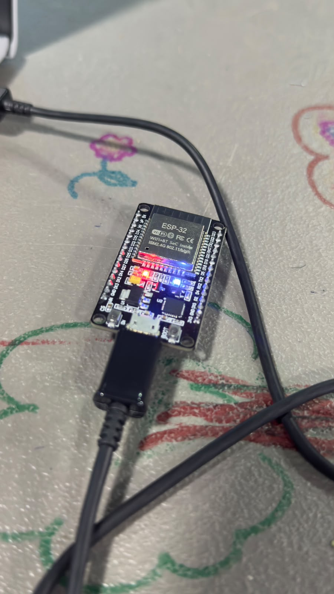
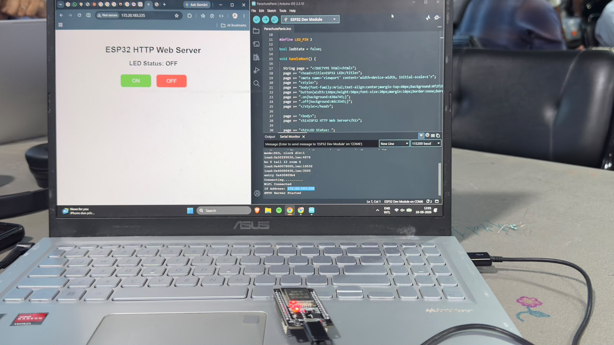

ESP32 LED Blink & Serial Monitor
GPIO pin configuration, digital output logic switching, serial UART communication, and timing loops using ESP32 microcontroller.
1. Overview
This initial experiment establishes the foundational workflow for working with the ESP32 microcontroller. The objective is to initialize General Purpose Input/Output (GPIO) pins, output high and low digital states to toggle an LED, and simultaneously transmit telemetry strings back to the host computer via serial UART communication at 115200 baud.
2. Core Concepts
| Concept | Function / Role |
|---|---|
| GPIO Output | Configures a hardware pin to output either 3.3V (HIGH) or 0V (LOW). |
| UART Serial | Transmits textual state updates over USB for debugging and status monitoring. |
| Baud Rate | Sets symbol transmission speed (115200 bits/sec) between ESP32 and host PC. |
| Non-blocking Delay | Foundation for managing hardware execution loops without freezing MCU registers. |
3. System Architecture
Data and signal path from code compilation to hardware actuation:
4. Specifications
| Parameter | Value / Description | Notes |
|---|---|---|
| Microcontroller | ESP32 WROOM-32 | Dual-Core Tensilica LX6 @ 240MHz |
| Target Output Pin | GPIO 2 | Connected to onboard status LED |
| Logic High Output | 3.3V DC | Maximum source current 40mA per pin |
| Serial Speed | 115200 Baud | Hardware Serial UART 0 |
5. Wiring & Hardware Setup
ESP32 Pin Connections
- GPIO 2 LED Anode (+) via 220Ω Resistor
- GND LED Cathode (-) Ground Rail
- Micro-USB 5V Power & Serial Interface
Verification Steps
- Verify blue onboard LED blinks at 1 Hz (1 sec ON, 1 sec OFF).
- Open Serial Monitor in Arduino IDE set to 115200 baud.
- Observe live stream messages:
LED State: HIGH/LED State: LOW.
6. Implementation Code
// Task 01: ESP32 LED Blink & Serial Telemetry
const int LED_PIN = 2; // Onboard LED on ESP32
void setup() {
// Initialize serial communication at 115200 baud
Serial.begin(115200);
delay(500);
// Configure GPIO pin as output
pinMode(LED_PIN, OUTPUT);
Serial.println("=== ESP32 Task 01 Initialized ===");
}
void loop() {
// Turn LED ON (3.3V)
digitalWrite(LED_PIN, HIGH);
Serial.println("Status: LED Turned ON [HIGH]");
delay(1000);
// Turn LED OFF (0V)
digitalWrite(LED_PIN, LOW);
Serial.println("Status: LED Turned OFF [LOW]");
delay(1000);
}7. Execution Steps
Toolchain Setup
Installed ESP32 board package in Arduino IDE and configured COM port for CP2102 driver.
Code Architecture
Configured pinMode(2, OUTPUT) and initiated serial hardware communication at 115200
baud.
Firmware Flashing
Uploaded C++ code to ESP32 board while holding the BOOT button during upload sequence.
Telemetry Validation
Verified synchronized LED blinking and live state logs printed on Serial Monitor.
8. Visual Evidence


9. Challenges & Fixes
Garbled characters appearing in the Serial Monitor upon uploading code.
Matched serial monitor dropdown baud rate to 115200 to match Serial.begin(115200) in
firmware setup.
10. Reflection
Task 1 established the foundation for embedded programming with ESP32. Understanding GPIO pin modes and setting up serial telemetry communication forms the bedrock for building more complex sensor monitoring and cloud-connected IoT systems in subsequent experiments.